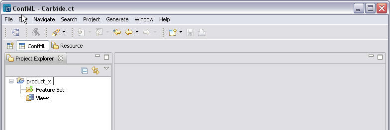

Creating a new Configuration Project
To create a new Configuration Project:
- Right click the Project Explorer and select New > Project.
- On the wizard, choose Configuration Project.
- Specify the name of the project (e.g. product name).
- Click Finish.
The project is created, as shown in the following example.

Figure 2 Example new Configuration Project